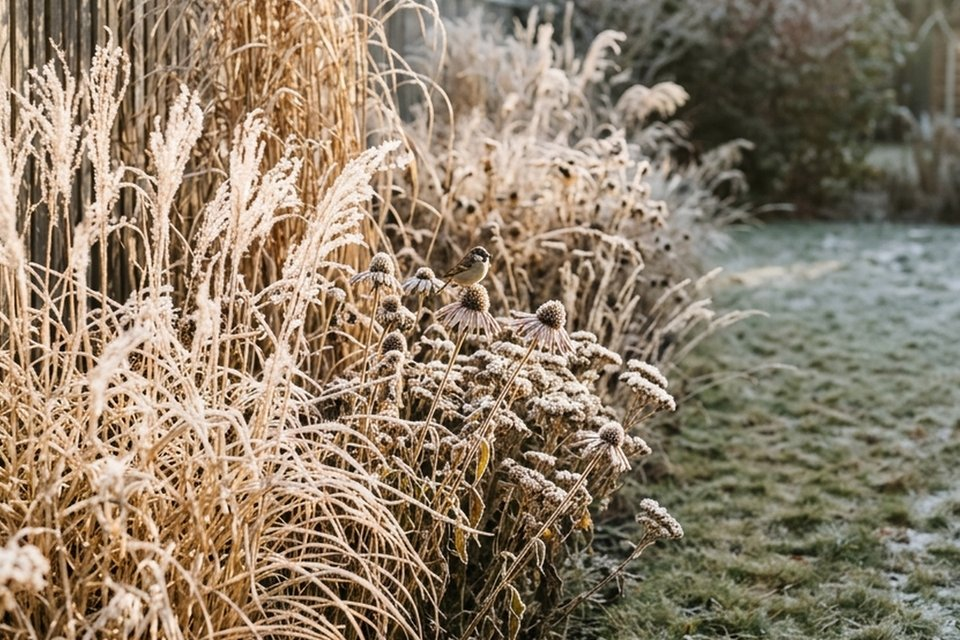

Gartenplanung im Winter: 10 Ideen fürs Frühjahr
Der Garten ruht – aber wer jetzt plant, hat im Frühling einen Vorsprung. Diese zehn Ideen kosten meist wenig und lassen sich an einem freien Wintertag umsetzen.
Die 10 Ideen
1. Gräser und Stauden stehen lassen
Die Idee aus dem Bild: Ziergräser und Samenstände von Sonnenhut, Fetthenne und Schafgarbe nicht im Herbst abschneiden. Mit Raureif sehen sie wunderschön aus, Insekten überwintern in den Stängeln und Vögel fressen die Samen. Zurückgeschnitten wird erst Ende Februar oder im März, bevor der neue Austrieb kommt.
0 €
2. Einen Gartenplan zeichnen
Den Garten auf Papier skizzieren: Wo ist Sonne, wo Schatten, wo steht Wasser? Daraus ergibt sich, was wohin gepflanzt wird.
0 €
3. Saatgut aussuchen und bestellen
Im Januar ist die Auswahl am größten. Einen Anbauplan machen: Was wird wann ausgesät?
ca. 15–40 €
4. Ein Hochbeet planen
Jetzt Material vergleichen und im Februar aufbauen, dann ist es zur Aussaat bereit: Holz, Metall oder WPC? und Hochbeet selber bauen.
ca. 60–350 €
5. Obstbäume schneiden
Apfel- und Birnbäume werden an frostfreien Tagen im Spätwinter (Februar) geschnitten. Kirschen und Pflaumen dagegen lieber nach der Ernte im Sommer.
0 € (plus Astschere)
6. Werkzeug pflegen
Scheren schärfen, Spaten reinigen und ölen. Gutes Werkzeug hält so viele Jahre.
ca. 0–15 €
7. Eine Futterstelle für Vögel
Ein Futterhaus oder Meisenknödel ohne Plastiknetz. Vögel danken es im Sommer, indem sie Blattläuse fressen.
ca. 10–30 €
8. Kompost umsetzen
Den Kompost an einem milden Tag umschichten – im Frühjahr ist er dann reif fürs Beet.
0 €
9. Letzte Blumenzwiebeln setzen
Solange der Boden nicht gefroren ist, können Tulpen und Narzissen noch bis in den Dezember in die Erde. Ideen für Töpfe: Balkonkästen fürs Frühjahr.
ca. 10–25 €
10. Wurzelnackte Rosen und Hecken pflanzen
Von November bis März gibt es Rosen, Obststräucher und Heckenpflanzen wurzelnackt – deutlich günstiger als im Topf. Bei frostfreiem Wetter pflanzen.
ca. 3–15 € pro Pflanze
Winter-Kalender
| Monat | Was |
|---|---|
| Dezember | Zwiebeln setzen (frostfrei), Futterstelle, Werkzeug |
| Januar | Gartenplan, Saatgut bestellen, Kompost |
| Februar | Obstbäume schneiden, Hochbeet bauen, wurzelnackt pflanzen |
| März | Gräser und Stauden zurückschneiden, erste Aussaat |
Richtwerte für Deutschland, Stand November 2026. Die Preise schwanken je nach Händler und Saison.
Häufige Fragen
Sehen stehen gelassene Stauden nicht unordentlich aus?
Mit Raureif oder Schnee sind sie der schönste Teil des Wintergartens. Nur umgeknickte, matschige Stängel kann man schon im Winter entfernen.
Was kann ich auf dem Balkon im Winter tun?
Den Balkon gemütlich machen und Pflanzen fürs Frühjahr planen: 8 winterharte Balkonpflanzen.